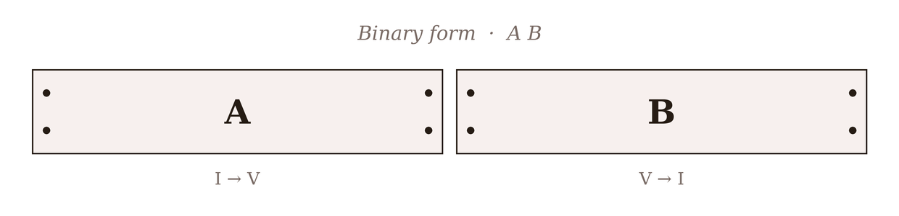
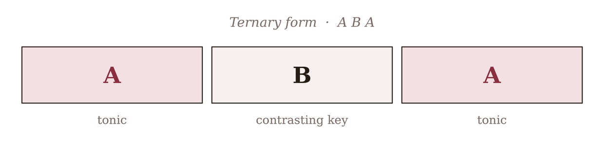

A phrase is a sentence; a period is a pair of sentences; and a form is the whole essay — the arrangement of sections that gives an entire piece its shape. With modulation now in hand (Chapter 22), we can build these larger structures, because form is largely a matter of where the music goes and how it comes back. The two most fundamental shapes, underlying an astonishing proportion of all the short music ever written — dances, songs, character pieces, theme statements — are binary and ternary form: the two-part and the three-part. Learn these two and you have the skeleton of most music shorter than a symphony.
23.1Form as sections
A section is a span of music larger than a phrase — often a whole period or sentence, sixteen bars or so — that functions as one unit of the piece’s architecture, set off from its neighbours by a strong cadence and often by a change of key or character. We label sections with capital letters in the order they appear: the first distinct section is A, the next different one B, a third C, and a return of earlier material reuses its letter. So a piece described as A B A has an opening section, a contrasting one, and then the opening again. This letter-labelling is the vocabulary of form, and it lets us describe the shape of a whole piece in a few characters.
What makes two sections “the same” or “different” is chiefly their material (their melodies and motives) and their key. A section that returns to earlier material in the home key is heard as a homecoming; a section with new material in a new key is heard as a departure. Form is the composed pattern of those departures and returns.
23.2Binary form
Binary form has two sections, A and B, and its defining feature is a tonal journey split across them. The A section begins in the home key and travels — most often modulating to the dominant (or, in a minor key, the relative major), ending there, away from home. The B section takes up from that foreign key and works its way back, ending with a firm cadence in the tonic. Each section is usually repeated.

The crucial thing about the binary form in Figure 23.1 is that the two halves are interdependent: section A does not end at home — it ends on the dominant, unresolved, deliberately leaning forward — so B is required to complete the thought. This is the sound of countless Baroque dances (the movements of a Bach suite are nearly all binary) and folk tunes. A common and important variant is rounded binary, in which the opening melody of A comes back near the end of B, rounding the form off with a taste of the beginning (diagrammed A · B A’, still in two repeated halves). Rounded binary is the direct ancestor of the larger forms to come, because it introduces the powerful idea of a thematic return.
23.3Ternary form
Ternary form has three sections — A B A — and it works on a different principle: not one journey split in two, but a complete statement, a contrasting departure, and a full return.

In the ternary form of Figure 23.2, the first A is closed — it begins and ends in the tonic, a little complete piece in itself — and then B provides contrast, typically in a related key and often with a distinctly different mood (a minor-mode middle to a major piece, say, or a calmer trio between two lively outer sections). When A returns, it does so intact, and that return is deeply satisfying precisely because A was complete the first time: we are hearing something whole come back. This is the form of the minuet-and-trio (itself A B A, where each of minuet and trio is often a rounded binary), the da capo aria, and a vast number of songs and character pieces.
23.4Binary versus ternary
The two forms can look similar on paper — rounded binary even has an “A” at the end — so it is worth being clear about the real distinction, which is about closure and independence:
- In ternary, the first A is a complete, closed unit that ends in the tonic and can stand alone; B is a genuine contrasting section; and A returns whole. The parts are independent.
- In binary, the two halves are interdependent: A ends away from the tonic, unresolved, so it cannot stand alone, and B exists to complete the tonal journey A began.
Put simply: ternary is statement–contrast–return of self-sufficient sections; binary is a single arc — out and back — divided into two dependent halves. Rounded binary sits between them, borrowing ternary’s thematic return while keeping binary’s dependent, repeated halves.
23.5Why return satisfies
Underneath both forms is the same deep principle you met in modulation: departure and return. Music sets up a home, leaves it — for a new key, new material, or both — and comes back, and the coming back is what the whole structure is for. The return satisfies because it resolves a tension that the departure created; it is the large-scale version of a dominant resolving to a tonic. Binary and ternary are the two simplest ways to compose that arc, and every larger form in the rest of this part — the rondo, with its repeatedly returning refrain, and sonata form, with its grand departure and recapitulation — is an elaboration of the same idea. Master the two- and three-part shapes and you have the template on which all of them are built.
In MuseScore
MuseScore has notation for exactly the structural signals these forms rely on — repeats, returns, and section breaks.
- Repeat barlines for binary form’s repeated halves: from the Barlines palette, place a start-repeat at the beginning of a section and an end-repeat at its close (or select the barline and apply them). On playback MuseScore will actually take the repeats.
- Da capo for ternary form’s return: rather than writing the A section out twice, end the B section with a D.C. al Fine (from the Repeats & Jumps palette) and mark the end of A with Fine — the standard shorthand for “go back to the start and play to Fine.” This is literally how ternary and minuet-and-trio movements are written.
- Double barlines (also in Barlines) to mark section boundaries visually, and rehearsal marks (Add ▸ Text ▸ Rehearsal Mark, or Ctrl+M) to label sections A, B, A so the form is legible at a glance.
Try it: take the little piece you wrote for Project 3 and turn it into a ternary form — mark it as your A, write a contrasting B section (try the relative minor, or the subdominant, for a different colour), and then bring A back with a D.C. al Fine. You will have composed your first piece with a real large-scale form, which is exactly what Project 4 will ask of you.